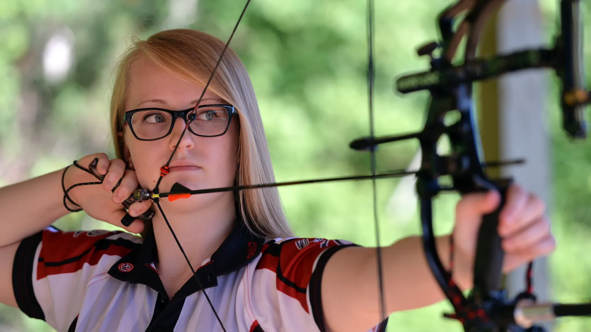
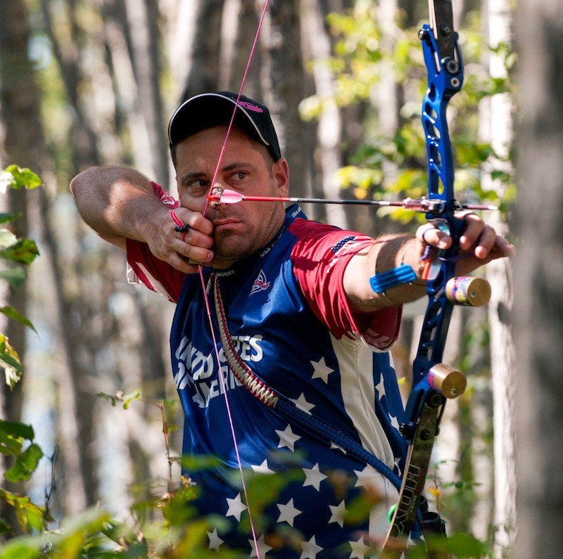
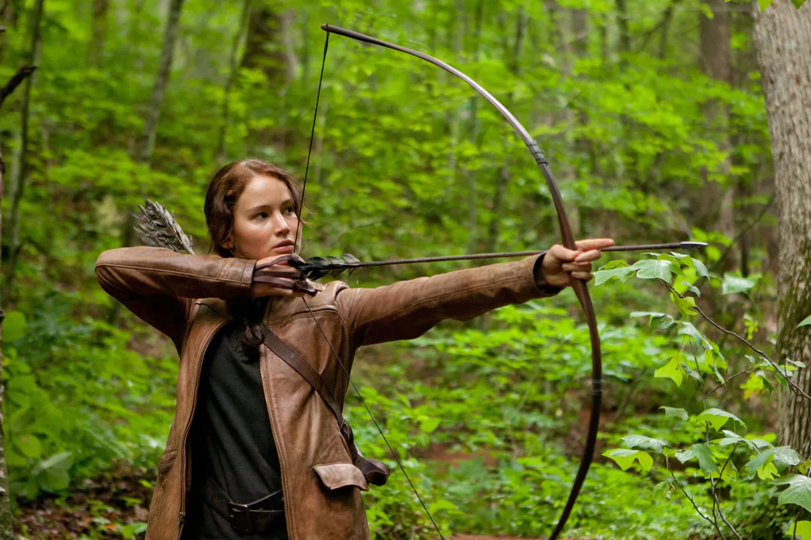

Jane Doe

Certified archery instructor with 10+ years in competitive archery. Specializes in advanced techniques and has won multiple regional tournaments. Loves mentoring beginners to build confidence.
Certifications: USA Archery Level 3 Coach, First Aid Certified.
Contact Jane
John Smith

Expert in beginner coaching and safety training with 8 years of experience. Focuses on fun, inclusive sessions for all ages. Previously coached youth teams to state championships.
Certifications: USA Archery Level 2 Coach, CPR Certified.
Contact John
Emily Johnson

5+ years teaching intermediate and advanced classes. Passionate about precision and mental focus. Has a background in sports psychology.
Certifications: USA Archery Level 2 Coach, Mental Performance Coaching.
Contact Emily